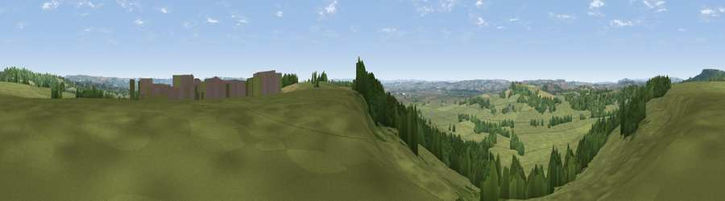

Viewpoint near Cucklington
#23881 in England · top 48% of its area beats it · near CucklingtonWhere it is
The exact computed spot (ST 75525 28725). Click the marker for map links.
The view, rendered

A 360° render of this exact spot computed from the terrain model, tree cover and land cover — summer colours, afternoon light, calibrated against photographs of famous viewpoints. Real trees, hedges and buildings will differ in detail.
The panorama
Grey silhouette: terrain skyline in each direction (720 bearings, Earth curvature and refraction included). Dashed green: skyline with trees (+15 m) and buildings (+8 m) as obstacles. Blue strip: how far the ground is visible on each bearing.
Where the view opens
Wedge length = distance to the farthest visible ground on that bearing (vegetation-aware). Rings at 10, 25 and 50 km.
What fills the view
75% grassland · 19% woodland · 4% cropland ·
Angular shares of the visible panorama (visual magnitude), not map area. Landscape diversity 0.31 (0–1 Shannon).
Key numbers
More beautiful places nearby
The staircase of upgrades: each row has a higher view potential than everything closer. Driving times are estimates from straight-line distance, calibrated against real road routing — check an actual route before setting out.
| Place | Direction | Drive | Score |
|---|---|---|---|
| Viewpoint near Penselwood | N · 2 km | ~5 min | 62.9 |
| Viewpoint near Penselwood | N · 5 km | ~11 min | 65.2 |
| Viewpoint near South Brewham | N · 6 km | ~13 min | 67.5 |
| Viewpoint near South Brewham | N · 7 km | ~14 min | 69.5 |
| Viewpoint near Stour Row | SE · 9 km | ~18 min | 70.0 |
| Long Knoll | NNE · 9 km | ~18 min | 74.6 |
| Viewpoint near Lamyatt | NW · 11 km | ~21 min | 77.8 |
| Viewpoint near Berwick St John | ESE · 19 km | ~32 min | 78.2 |
51.05734, -2.35059 · source: screening · position refined by local search. Computed location — check access rights before visiting.